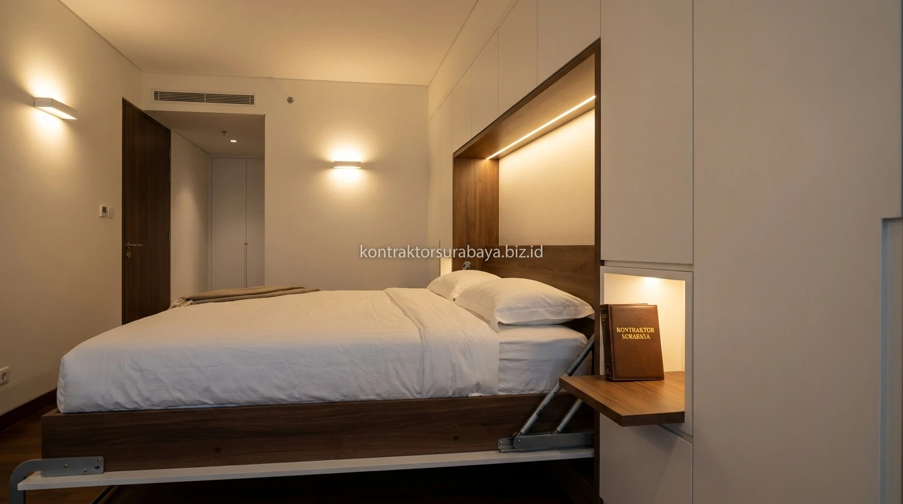

Apartemen interior custom di Surabaya semakin banyak memanfaatkan smart furniture lipat seperti wallbed agar ruang terbatas tetap terasa fungsional dan rapi. Keterbatasan luas unit menjadi tantangan utama saat menata interior apartemen, terutama pada tipe studio atau 1-bedroom di berbagai tower apartemen favorit Surabaya seperti kawasan Pakuwon Mall, Ciputra World, Grand Sungkono Lagoon, Klaska Residence, hingga Praxis.
Penggunaan perabot konvensional berukuran besar sering kali membuat unit apartemen terasa sempit dan sesak. Oleh karena itu, pendekatan smart furniture lipat menjadi tren inovatif yang menggabungkan keindahan estetika modern dengan kepraktisan pemanfaatan ruang secara maksimal.
1. Mengapa Smart Furniture Lipat Cocok untuk Apartemen Berukuran Terbatas?
Smart furniture lipat memungkinkan satu ruang berganti fungsi sesuai kebutuhan tanpa menambah luas unit, misalnya ruang tamu atau area kerja yang dapat berubah menjadi kamar tidur yang nyaman pada malam hari.
Pendekatan ini banyak diterapkan pada proyek interior custom apartemen di Surabaya karena harga unit apartemen umumnya dihitung per meter persegi, sehingga efisiensi pemanfaatan ruang berdampak langsung pada nilai fungsional dan kenyamanan hidup penghuni. Dengan konsep lipat, area lantai (floor space) tetap lapang di siang hari untuk beraktivitas atau menyambut tamu.
2. Jenis Smart Furniture Lipat yang Populer untuk Apartemen
Beberapa jenis furniture lipat multifungsi yang umum dirancang pada proyek interior custom apartemen meliputi:
- Wallbed (Murphy Bed / Kasur Dinding Lipat): Tempat tidur berukuran single hingga queen yang dapat dilipat tegak ke dalam dinding lemari built-in saat tidak digunakan, menyisakan area lantai yang luas.
- Meja Makan Lipat Dinding (Drop-Leaf / Fold-Down Dining Table): Meja makan yang dapat dilipat rata menempel pada dinding atau panel kabinet saat selesai santap makan.
- Kursi Lipat & Ottoman Tersembunyi: Kursi modular atau stool gantung yang dapat disembunyikan di bawah meja kerja atau digantung rapi pada dinding aksen.
- Lemari Built-in Multifungsi (Study-to-Wardrobe): Unit kabinet yang menggabungkan rak buku, lemari pakaian, dan meja laptop lipat dalam satu kesatuan struktur kabinet dinding.

3. Pertimbangan Material dan Mekanisme untuk Furniture Lipat
Pemilihan material pada furniture lipat perlu memperhitungkan bobot dan frekuensi penggunaan, karena mekanisme lipat bekerja berulang kali setiap hari.
Rangka kabinet built-in umumnya menggunakan material multipleks atau blockboard meranti berkualitas tinggi dengan ketebalan 18 mm, dilapisi finishing HPL (High Pressure Laminate) motif kayu natural atau solid tone yang tahan gores dan tahan lembap. Sementara itu, komponen mekanikal lipat mengandalkan piston hidrolik gas spring impor dan engsel heavy duty baja anti-karat yang mampu menopang beban buka-tutup berulang hingga puluhan ribu kali tanpa kendala aus.
4. Bagaimana Menata Tata Letak Apartemen dengan Furniture Lipat?
Tata letak custom untuk apartemen dengan furniture lipat perlu memperhitungkan jalur sirkulasi yang cukup agar furniture dapat dibuka dan ditutup tanpa terhalang perabot lain.
Sebagai contoh, wallbed membutuhkan ruang kosong di depannya sepanjang bentang kasur (sekitar 200 cm) saat diturunkan. Oleh karena itu, posisi sofa, meja kopi fleksibel roda, atau partisi ruangan di sekitarnya harus direncanakan secara presisi sejak tahap simulasi 3D layout, sehingga perpindahan antar fungsi ruangan dapat berlangsung mulus tanpa perlu repot memindahkan banyak perabot lain.
5. Perawatan Smart Furniture Lipat agar Tetap Awet
Perawatan rutin pada bagian engsel, rel, dan mekanisme gas spring membantu menjaga furniture lipat tetap berfungsi lancar dalam jangka panjang:
- Pelumasan Berkala: Berikan pelumas silikon spray pada engsel dan poros engsel setiap 6 bulan sekali untuk mencegah bunyi derit dan keausan logam.
- Pengoperasian yang Benar: Buka dan tutup mekanisme lipat dengan tarikan seimbang menggunakan dua tangan agar distribusi beban hidrolik merata.
- Kontrol Beban Maksimal: Pastikan ketebalan dan bobot kasur busa/springbed sesuai dengan spesifikasi daya angkat piston hidrolik yang terpasang.
- Pembersihan Celah Rel: Bersihkan debu pada celah rel geser kabinet agar mekanisme sliding tidak macet.
6. Faktor yang Memengaruhi Biaya Interior Custom dengan Furniture Lipat
Biaya interior custom dengan smart furniture lipat dapat bervariasi tergantung jenis mekanisme yang dipilih, material finishing, serta tingkat kerumitan desain built-in yang diinginkan.
Mekanisme hidrolik otomatis dengan remote control atau gas spring bermerek Eropa memiliki harga lebih tinggi dibanding engsel mekanik manual. Selain itu, integrasi pencahayaan LED strip tersembunyi dan kabinet built-in custom yang dibuat pas dengan ukuran ruangan (fit-to-space) juga memengaruhi total anggaran. Berkonsultasi sejak tahap awal membantu Anda menentukan paket desain yang paling proporsional antara nilai estetika dan anggaran yang dialokasikan.
"Smart furniture bukan sekadar trik menghemat ruang, melainkan seni arsitektur interior yang memaksimalkan gaya hidup dinamis penghuni apartemen modern."
Konsultasikan konsep interior custom unit apartemen Anda bersama tim desainer berpengalaman kami. Pelajari rincian layanan selengkapnya pada halaman jasa desain interior Surabaya, atau lihat portofolio visual kami pada galeri proyek kami.